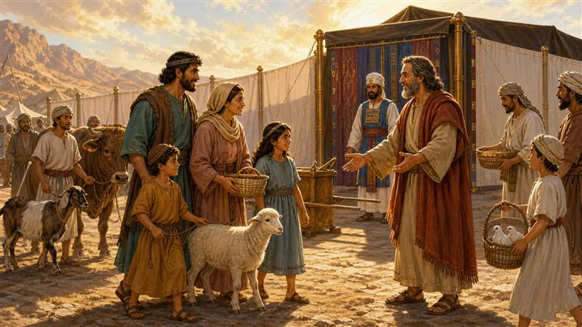
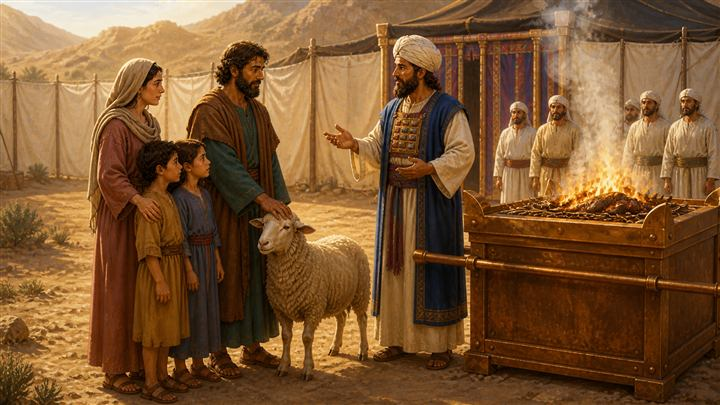
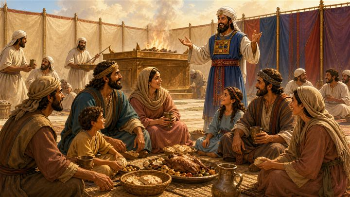
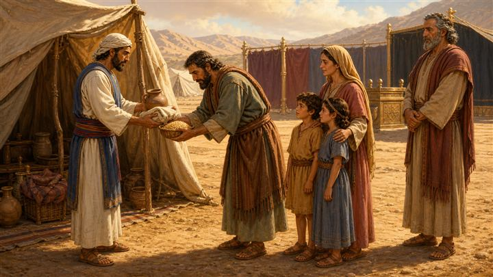
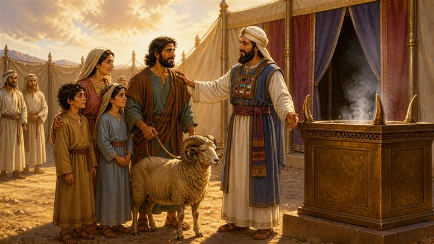
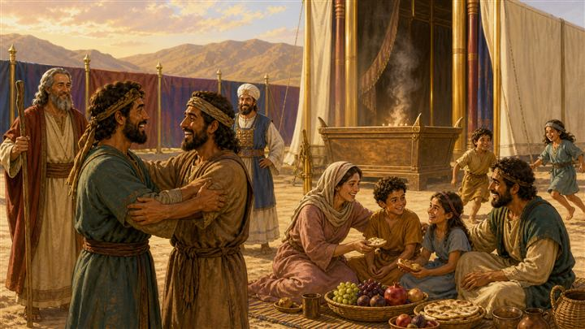

會幕的榮光
來，把眼睛放到這片營地上。中間那頂帳篷，叫做「會幕」。
以色列人剛從埃及出來，走了好久好久的路，現在紮營在曠野。你看見從會幕上升起的那道光了嗎？那不是火把，那是神的榮耀。
神說了一句很不得了的話：「我要住在他們中間。」——神不是住在很遠很遠的天上，祂把家搬到營地的正中央。
利未記 1-7｜做錯了以後，還可以回到神面前嗎？
認識利未記 1-7 的五種祭：燔祭、素祭、平安祭、贖罪祭、贖愆祭，知道每一種在處理的是不同的狀況。
知道這七章不是「一堆規矩」，而是神親口說出來的一份回家路線圖。
做錯了，第一個反應不是躲起來、也不是找理由，而是承認。
不用「我又不是故意的」當作不處理的理由——不小心造成的傷害，一樣是真的傷害。
獻上的價值不是比大小；把自己「有的」真心拿出來，就蒙悅納。
真正的道歉要多走五分之一：說完對不起不是結束，要讓對方比原本更好一點。
神的接納不是看價錢：一頭牛、兩隻鴿子、一把細麵，在壇前是一樣被收下的。
火不熄滅——那扇門不是只在我表現好的時候才開著。
以色列人剛離開埃及，會幕才剛立起來，神的榮耀就住進營地正中央。問題來了：一群會犯錯的人，怎麼可能住在聖潔的神旁邊？利未記就是神給的答案。
神從會幕裡呼叫摩西，講的第一件事不是「你們不可以怎樣」，而是「你們可以來，要這樣來」。祂一種一種地說明白，而且每一種都留了窮人的版本——牽不出牛，可以帶鴿子；買不起鴿子，帶一把細麵也行。
最扎實的一段在利未記 6 章：如果你騙了鄰居、拿了不該拿的、撿到不還，神的規定是先如數歸還，再加上五分之一，然後才來獻祭。順序不能顛倒——先跟人和好，才來到神面前。
最後神交代祭司一句話，把整卷書的溫度定下來：「在壇上必有常常燒著的火，不可熄滅。」半夜三點沒有人在看的時候，火還燒著。那扇門一直開著。
在壇上必有常常燒著的火，不可熄滅。利未記 6:13
所以，你在祭壇上獻禮物的時候，若想起弟兄向你懷怨，就把禮物留在壇前，先去同弟兄和好，然後來獻禮物。馬太福音 5:23-24
主啊，我把所有的一半給窮人；我若訛詐了誰，就還他四倍。路加福音 19:8 · 撒該
我們若認自己的罪，神是信實的，是公義的，必要赦免我們的罪，洗淨我們一切的不義。約翰一書 1:9
利未記常被當成「跳過去也沒關係的一卷」，因為滿滿都是祭牲、血和條例。可是換個角度看：這是一群剛脫離奴隸身分的人，第一次學習怎麼跟神同住。神沒有把祂的聖潔調低來遷就他們，也沒有把他們趕遠，而是給了一套「你可以走過來」的具體流程。這卷書的底色不是恐嚇，是神主動把回家的路標好。
特別要注意，神在每一種祭裡都寫了窮人條款（利 1:14、5:7、5:11）。從頭到尾，神沒有讓任何人因為付不起而進不來。這對常被「誰比較厲害、誰家比較有錢」比較著長大的中高年級孩子，是很直接的一句話。
最需要停下來講的是利未記 6:1-7。神把「欺騙鄰舍、搶奪、撿到不還」定義成得罪神，而不只是人跟人之間的小事；然後給了一個很不一樣的處理方式：如數歸還，另加五分之一，然後才獻贖愆祭。這個「多加的五分之一」是整堂課的鉤子——它承認了一件事：對方在這段時間裡的損失和難受是真的，光說對不起補不回來。順序也是刻意的：先去把人的關係修好，再來到壇前。耶穌在馬太福音 5:23-24 講的是同一個順序，撒該說「還他四倍」用的是同一個邏輯。
最後，利未記 6:13 那句「火不可熄滅」，是把神的接納從「一次性的事件」變成「持續的狀態」。孩子最常有的恐懼是：這次可以，下次呢？我又搞砸了怎麼辦？那把整夜有人添柴、沒有人在看也還燒著的火，就是答案。而這一切在新約有了終點——祭司天天獻、年年獻，基督卻是一次獻上，永遠有效（來 10:11-12）。
| 起 | 長度 | 單元 | 內容 |
|---|---|---|---|
| 00:00 | 1'30" | 開場提問 |
|
| 01:30 | 9'00" | 經文故事 20 張分鏡 |
|
| 10:30 | 2'00" | 遊戲規則 |
|
| 12:30 | 5'00" | 遊戲進行 |
|
| 17:30 | 2'30" | 反思總結 |
|
| 20:00 | — | 道具：闖禍卡 ×6、紙捲柴 ×10、紙箱 ×1 | |
來，把眼睛放到這片營地上。中間那頂帳篷，叫做「會幕」。
以色列人剛從埃及出來，走了好久好久的路，現在紮營在曠野。你看見從會幕上升起的那道光了嗎？那不是火把，那是神的榮耀。
神說了一句很不得了的話：「我要住在他們中間。」——神不是住在很遠很遠的天上，祂把家搬到營地的正中央。
有一天，摩西站在會幕門口。他沒有走進去，因為裡面太聖潔了。
就在這時候，神從會幕裡面呼叫他：「摩西。」
★ 你猜，神接下來要說什麼？是要罵人嗎？還是要罰誰？
都不是。神要教他們一件很重要的事：人做錯了以後，怎麼還能回到神面前。
利未記 1:1

摩西把神的話傳出去，整個營地就熱鬧起來了。有人牽牛、有人牽羊，還有小朋友抱著籃子，裡面裝了兩隻白鴿子。
注意看他們的臉，不是害怕的，是期待的。因為神說的第一句話不是「你們不可以來」，而是：「你們可以來，這樣來。」

第一種祭叫燔祭。看這位爸爸，他把手按在羊的頭上。這個動作的意思是：「這隻羊，代替我。」
然後祭司把牠整隻放在壇上燒——不留一塊肉、不留一張皮，全部燒給神。
燔祭在說一句話：「神啊，我不是給你我的一部分，我把整個我都給你。」
利未記 1 章
可是，如果家裡很窮，牽不出一頭牛怎麼辦？神早就想到了。
你看這位老奶奶，她手上只有兩隻斑鳩。祭司彎下腰，雙手接過來——他用的力氣、他的表情，跟接一頭牛一模一樣。
在神面前，禮物的大小不是重點。神看的是：你有沒有把你「有的」，真心拿出來。
利未記 1:14
第二種祭叫素祭。不用動物，是細麵、油，還有乳香。
神特別交代：素祭要加鹽，不可以加酵和蜜。鹽代表「我們的約不會壞掉」。
這一家人獻的，是他們廚房裡本來要吃的麵粉。原來獻給神的，不一定是特別的東西——也可以是你每一天的日常。
利未記 2 章

第三種祭最特別，叫平安祭。這種祭獻完以後，肉不是全燒掉，是大家坐下來一起吃。
你看，祭司、爸爸、媽媽、小孩，全部圍成一圈，笑著、吃著、講話。
平安祭在告訴他們一件事：跟神和好，最後會變成什麼樣子？會變成一頓大家一起吃的飯。
利未記 3 章
你看旁邊的祭司在洗手洗腳。他們不是因為髒才洗，是因為要進到神面前，每一件事都要用「分別出來」的心去做。
神說「你們要聖潔」，意思不是「你們要完美」，是「你們要屬於我」。
這位爸爸低著頭，手放在胸口。他做錯了一件事——而且他是不小心做的，做的當下自己都不知道。
神有沒有說「沒關係啦，你又不是故意的」？神說的是：知道了，就要處理。
這叫贖罪祭。不是故意的錯，一樣會傷到人、一樣會弄髒關係，所以一樣要拿到神面前。
★ 你有沒有過「不是故意的，但還是害到別人」的經驗？
利未記 4 章
祭司照著神教的方法，把血抹在壇的角上，旁邊擺著一大盆水。
這些動作看起來好複雜，但它們從頭到尾在說同一件事：錯不會自己消失，需要有人付代價，把它洗乾淨。
以色列人做這些的時候還不知道——很多很多年以後，真的有一位來付了這個代價。祂的名字叫耶穌。
再看這位媽媽。她站在摩西和祭司面前，當著大家的面說話。
神在利未記 5 章講了幾種罪：知道事情卻不說、亂發誓、碰了不該碰的。她犯了其中一樣——她本來可以偷偷藏著，沒有人會發現。
但是神說：「他要承認所犯的罪。」承認，是回來的第一步。藏起來的東西，不會自己不見。
利未記 5:1-5
這位媽媽家裡真的很窮，窮到連兩隻鴿子都買不起。神說：那就拿一點點細麵來。
祭司接過那個小碗，一樣抓一把放到壇上，一樣宣告：你被神接納了。
神從來不會因為你窮，就把你關在門外。
利未記 5:11
換一個故事。這位叔叔回到帳篷，手上抱著一個包袱和一個罐子。他忽然想起來——這不是他的。這是鄰居的，他當初說要還，後來就「忘記」了。
看他的表情。他心裡知道。
利未記 6 章講的就是這種事：欺騙鄰舍、搶奪、撿到不還。神說，這種事不只是對人犯罪，也是對神犯罪。
利未記 6:2

所以他做了一件很不容易的事——他走去鄰居的帳篷，把東西還回去。
而且神的規定不只是「還」。神說：要如數歸還，另外再加上五分之一。
★ 為什麼要多加？
因為對方這段時間受的損失、心裡的難過，是真的存在的。真正的「對不起」，會做到讓對方比原本更好一點。
利未記 6:4-5

還完東西以後，他才牽了一隻公綿羊，來獻贖愆祭。
順序很重要，你有沒有發現？先去跟人和好，再來到神面前。
祭司把手放在他的肩膀上——這個動作的意思是：「神收下了。你可以抬起頭了。」
利未記 6:6-7
利未記後面幾章，神很仔細地教祭司：哪一份要燒、哪一份祭司可以吃、器皿要怎麼洗、灰要倒在哪裡。
看起來很瑣碎，對不對？可是每一個小動作，都在為同一件事服務：讓走進來的人，真的能被接納。
你身邊也有這種人——為了讓聚會可以順利，默默在旁邊做很多小事的人。
利未記 6-7 章
天黑了，全營地的人都睡了。可是你看，還有一個祭司在壇邊加柴。
神特別交代過一句話：「在壇上必有常常燒著的火，不可熄滅。」
半夜三點，沒有人在看，火還是燒著。
利未記 6:13
太陽出來，第一件事——把柴遞給下一個人，讓火繼續。
這把火，整個晚上沒有斷過。它在說一件事，我要你們記住：
神接納你的那扇門，不是只有你表現好的時候才開著。你睡著的時候，它也開著。

回到剛剛那位叔叔。你看見了嗎——他跟鄰居抱在一起了。
旁邊，一家人坐在地上分餅、吃水果，孩子在後面跑來跑去。
利未記講了整整七章的祭，講到最後，結局長這樣：不是有人被處罰，是關係被修好了。
最後一張。整個營地都聚過來了：摩西、大祭司、大人、小孩、老人家。壇上的火冒著煙，直直往上升。
利未記 1 到 7 章，從頭到尾在說一件事：
神先開了一條路，讓做錯的人可以回來；而回來的人，會把整個群體一起帶回來。
下次你不小心弄壞了什麼、傷到了誰——記得這把火。它還燒著，它在等你。
第 09 張一定要停。中高年級已經很會分辨「故意」和「不小心」，而且「我又不是故意的」是他們最常用的擋箭牌。這張圖是整堂課第一個鬆動點——不要急著往下講，等到有人願意講自己的例子再走。
第 14 張是全課的核心，其他都是鋪陳。「加五分之一」要用他們生活裡的單位講：不是「還你橡皮擦」，是「還你橡皮擦，而且我幫你跟老師解釋是我弄丟的」。抽象的補償孩子接不住，具體的行動才接得住。
不要讓「賠償」變成「贖罪券」。一定會有孩子推論成「那我只要賠得起，就可以一直做錯」。這是好問題，不要壓下去。回答的方向：神規定要先真的去跟人和好（利 6:4-5）——這件事假裝不來；而且結束一定要回到第 17、18 張：我們能回來，不是因為我們賠得起，是因為神先留了路。
血和祭牲不要渲染。不描述宰殺過程，重點放在「有一位代替、有人付了代價」。第 10 張帶到耶穌就好，不要展開成福音呼召，這堂課的落點是「回來的路」。
窮人條款要講得夠明白（第 05、12 張）。大班裡常有家庭狀況差距，這兩張是給那些「覺得自己能給的很少」的孩子聽的。祭司接兩隻鴿子和接一頭牛的動作一模一樣——這句話請照著講。
遊戲要壓住競爭感。「和好快遞」沒有輸贏、沒有計分，柴是全班一起堆的。如果有組別開始比誰的補償比較誇張，把問題拉回：「對方收到，真的會覺得被修好嗎？」
收尾不要落在「你要努力」。結束句是火還燒著、門還開著。孩子帶回家的，要是「我可以回來」，不是「我要更乖」。
時間快超過時的取捨順序：先砍第 08、10、16 張（共省 65 秒），再把遊戲上台組數從 4 組減到 3 組。不要砍反思總結——那是整堂課落地的地方。